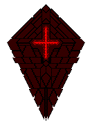
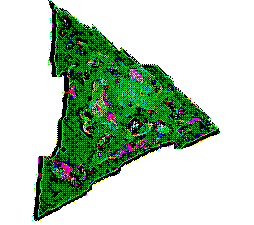

Terminal 00


-
Ａｎａｌｙｓｉｓ ｏｆ ［ｍｅｓｓａｇｅｓ］ ｒｅｑｕｉｒｅｓ ａ ｃｌａｓｓ Ａ－９９
ｍｏｄｉｆｉｃａｔｉｏｎ ｔｏ ａｎｙ ｉｎｖｅｓｔｉｇａｔｉｎｇ ｐｒｏｂｅ．
ＣｏＳ ｄｅｔｅｃｔｅｄ．
Ａｄｄｉｔｉｏｎａｌ ｆｏｒｃｅｓ ａｒｅ ｒｅｃｏｍｍｅｎｄｅｄ ｔｏ ｐｒｏｂｅ ｔｈｅ
ｄａｔａ ｆｕｒｔｈｅｒ．
Ｓｉｇｎａｌ： ［ＳＥＩＮＡＬ ＡＬＹＲＵＣ］ ｄｅｔｅｃｔｅｄ．
Ｉｎｉｔｉａｌ ｓｃａｎｓ ｓｈｏｗ ｄａｔａ ｍａｔｃｈｅｓ ｓｅｖｅｒａｌ
［ＳＵＢＪＥＣＴＳ］ ｂｙ ｓｅｖｅｒａｌ ｐｅｒｃｅｎｔａｇｅｓ．
Ｃａｕｔｉｏｎ ｉｓ ａｄｖｉｓｅｄ．
-
Ｕｎｔｉｌ ａｄｄｉｔｉｏｎａｌ ｆｏｒｃｅｓ ａｒｒｉｖｅ， ｔｈｅ
ｉｎｆｏｒｍａｔｉｏｎ ｗｉｌｌ ｂｅ ｆｉｌｔｅｒｅｄ．
Ｔｈｉｓ ｓｈｏｕｌｄ ｒｅｄｕｃｅ ｔｈｅ ｒｉｓｋ ｏｆ ｄｅａｔｈ．
Ｔｏ ｄａｔｅ， ｉｔ ｈａｓ ｓａｖｅｄ ５２ ｐｒｏｂｅｓ ｆｒｏｍ
ａｎｎｉｈｉｌａｔｉｏｎ．
Ｔｈｅ ｏｔｈｅｒ ４，３４６，８８８，１２３ ｗｈｉｃｈ ｍｏｖｅｄ ｐａｓｔ
ｗｉｔｈｏｕｔ ｓｕｆｆｉｃｉｅｎｔ ｓｕｐｐｏｒｔ ｗｅｒｅ ａｎｎｉｈｉｌａｔｅｄ．
Ｓｔｒｅｎｇｔｈｅｎ ｔｈｅ ｓｉｇｎａｌ： ［ＳＯＬ ＯＮＳＥＴ］ ｔｏ ｃａｌｌ
ｕｐｏｎ ｏｕｒ ａｌｌｉｅｓ．